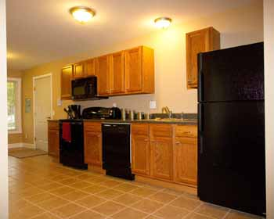
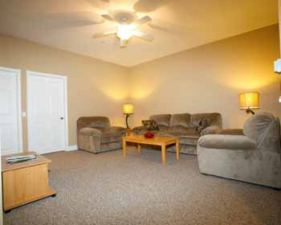
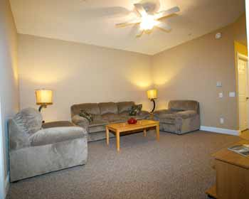
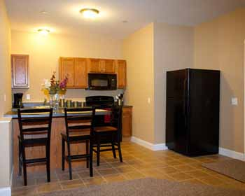
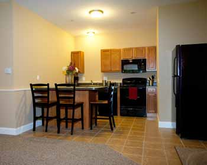
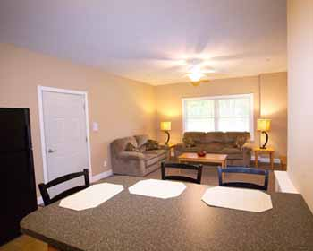
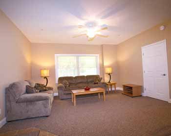
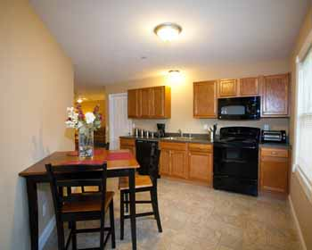
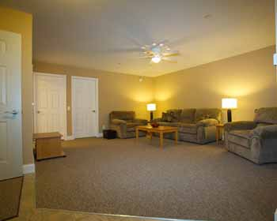
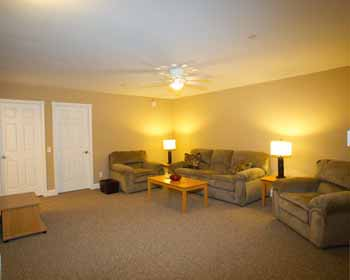
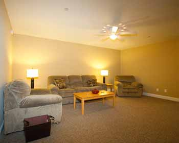
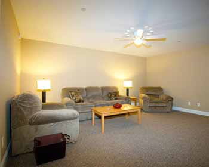
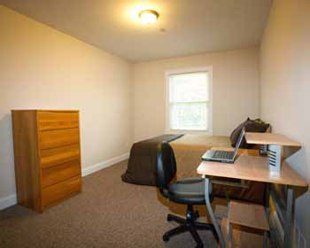
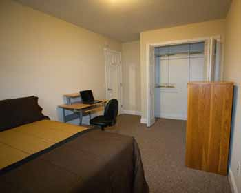
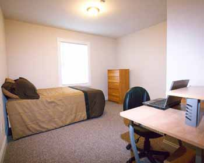
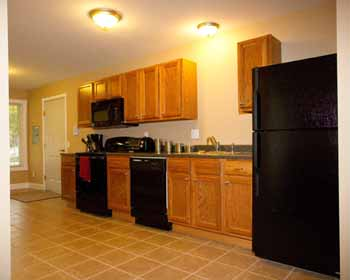
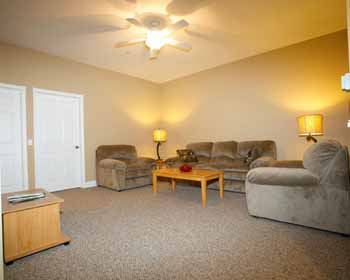
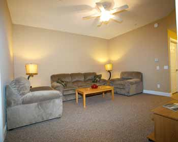
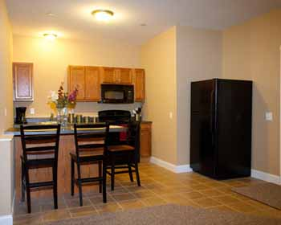
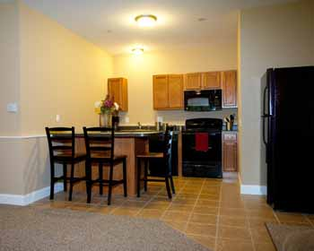
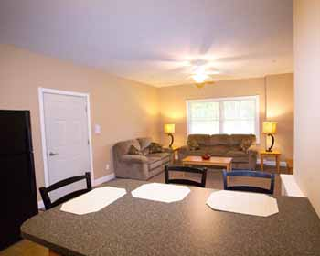
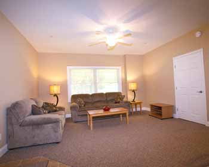
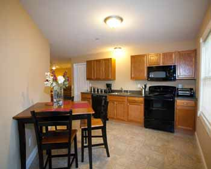
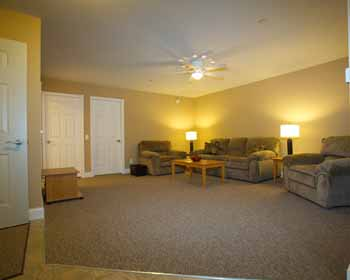
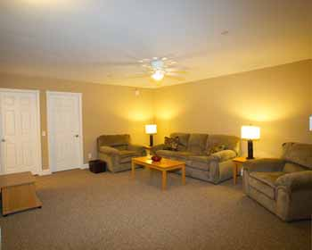
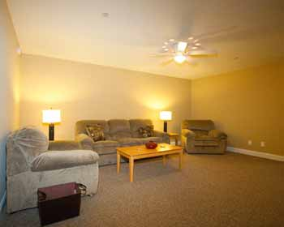
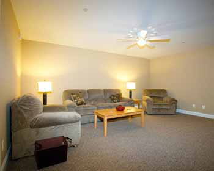
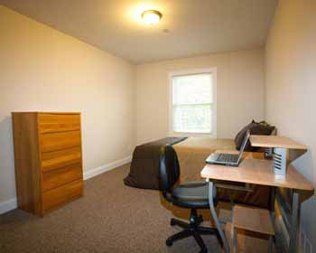
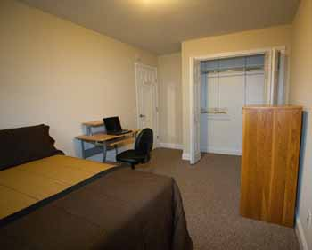
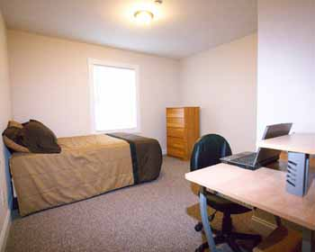
 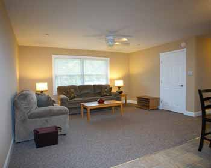
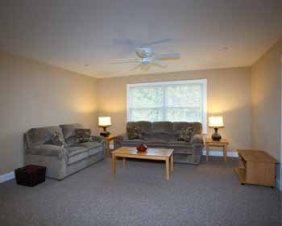
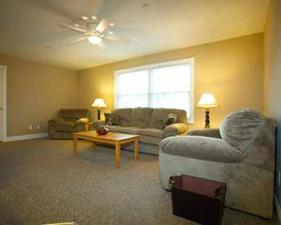
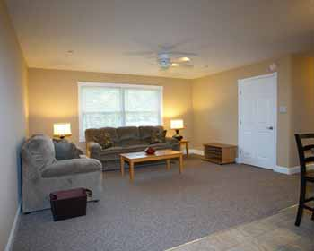
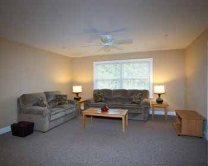
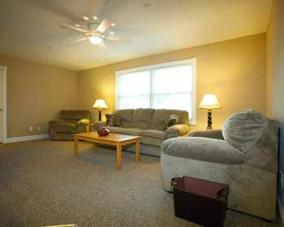
Cornerstone Properties has been in the home building industry for over 35 years. We build to the highest quality standards in the industry with superior craftsmanship and attention to detail. "The Suites" have been designed with today's college student in mind. Providing for all modern conveniences, safety and security, while at the same time complying with the City of Cortland's occupancy law. This law, which can be found on page 8 of the SUNY off-campus living booklet, states that no more than 3 unrelated people may live together in either a house or apartment.
If you are looking for student housing in Cortland NY that is both attractive and safe, Cornerstone Properties has the apartment for you. Cornerstone Properties is now accepting applications for all locations; complete our Online Request Application form or call today for availability and pricing.